Sharm El Luli or Ras Hankorab is located some 60km south of Marsa Alam town, The pristine white sands and fifty shades of blue of the waters of Ras Hankorab. This spot is locally known as Sharm El Luli . Here's where you put on your mask and fins and just walk into the water right from the stone-free beach. The beach has a very kind gradient so you can wade in effortlessly. After two minutes of swimming, you are entering another world that looks like a magical underwater forest.
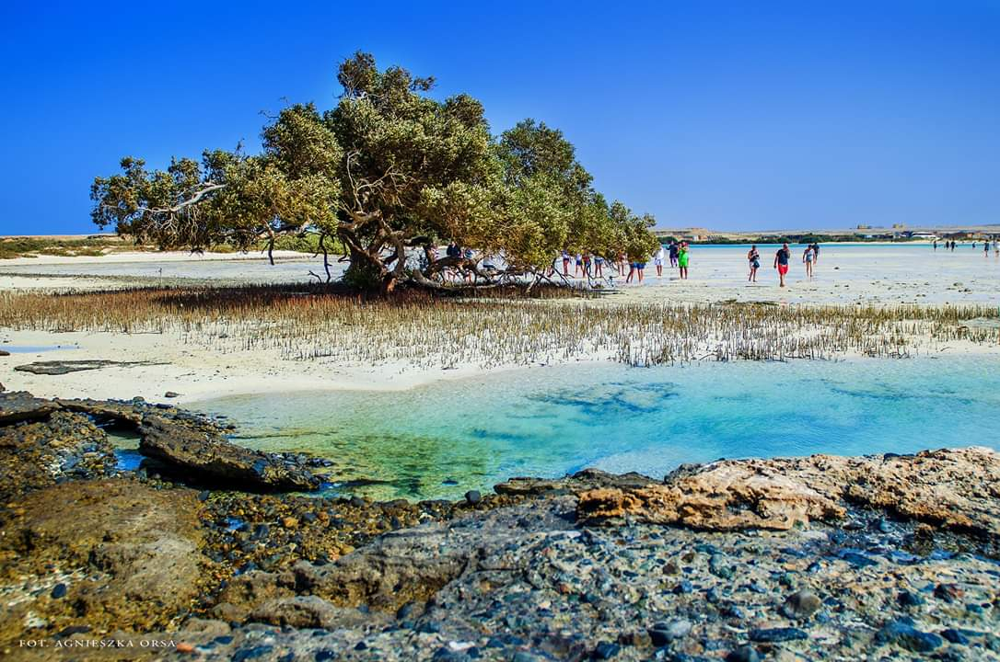
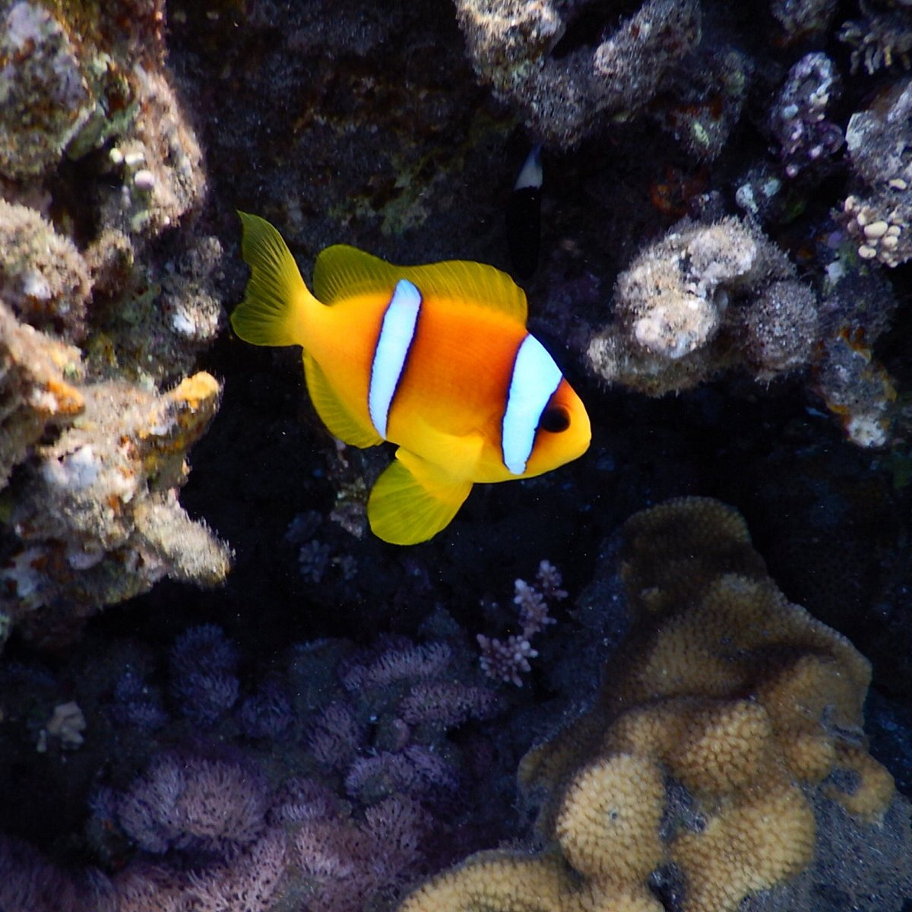
Marsa Mubarak
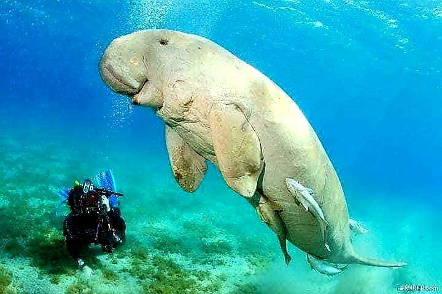
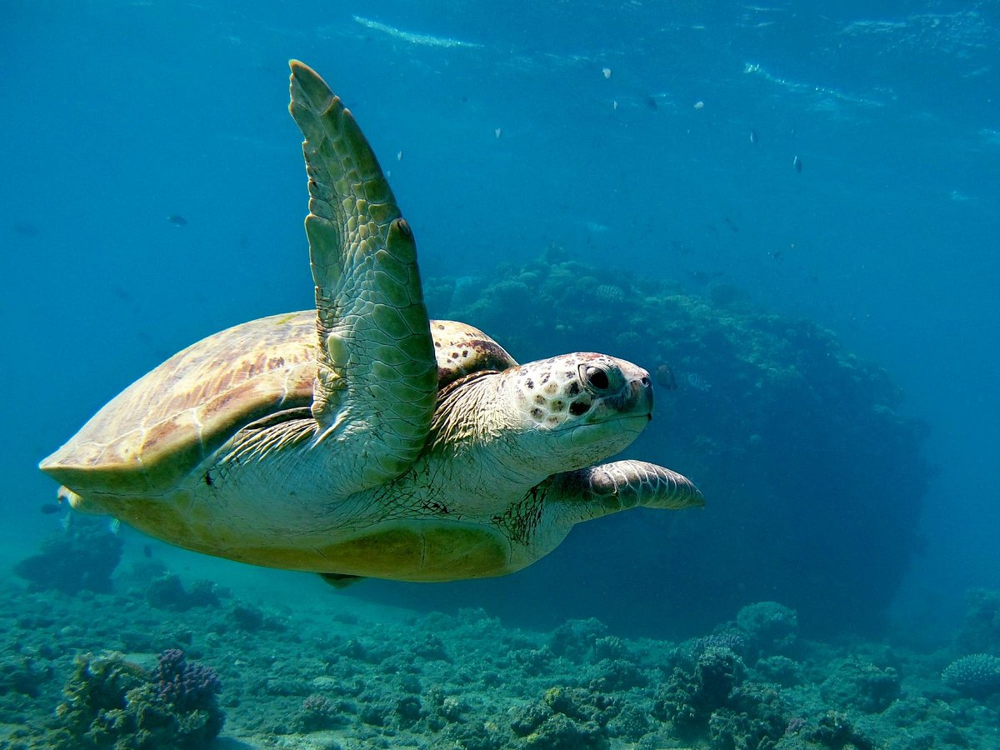
Take a boat trip toMarsa Mubarak , which is considered one of the most beautiful snorkels and dive sites in the area of Marsa Alam. During this tour, you will be able to explore the protected bay of Marsa Mubarak, which shows some of the most beautiful coral reefs in the Red Sea and the magnificent underwater seascapes. The crystal clear warm water of this site hosts a great variety of flora and fauna. If you are lucky, you may even get a glimpse of the endangered Dugong “sea cow”, which occasionally visit this sheltered bay to graze on the seagrass. The trip Starts from Port Ghalib
Abu Dabbab Beach
Abu Dabbab Beach is one of the most beautiful & famous white sand beaches in beautiful Marsa Alam. Abu Dabbab Beach is well know as a Turtles Beach, because every year many Sea Turtles are coming to lay their eggs in the white sand of this beach.They are living in amazing Abu Dabbab Bay, where you can see also Dugong and rich marina life around the corals while snorkeling ,On Abu Dabbab Beach you can find Aqua Blue for snorkeling and trips,This stunning bay is famous for its crystal clear waters, vibrant coral reefs, and diverse marine life
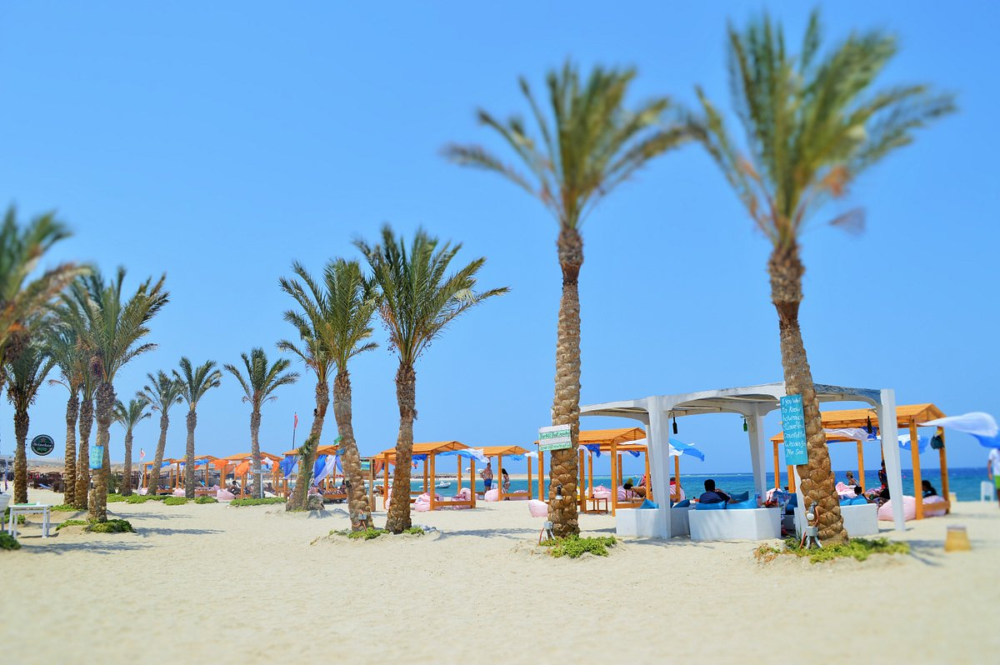
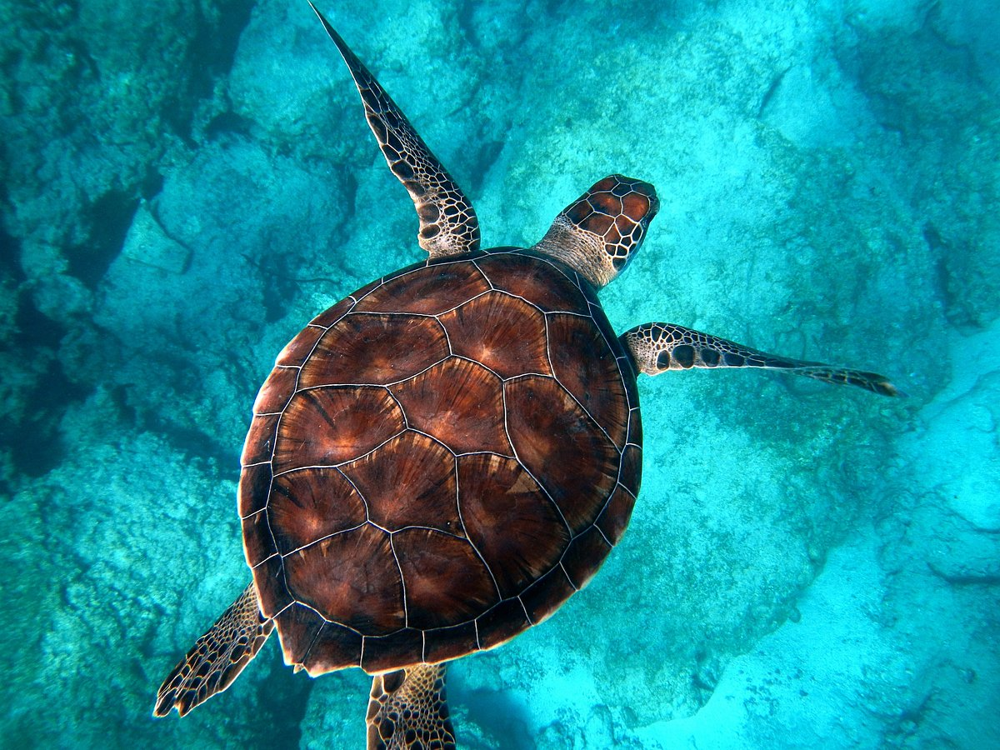
Elphinstone Reef
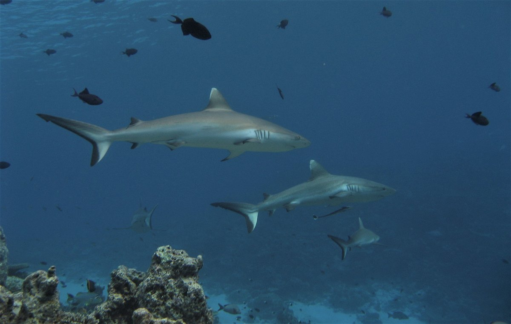
Elphinstone is a 375m long, off-shore reef with drop-offs descending to over 100m .Elphinstone is ranked among the top ten dive sites in the world. The site features an abundance of soft corals and almost every kind of sea life can be seen here.The reef is angled slightly to the north, which causes a constant current over the northern and southern plateaus. These plateaus are an ideal location to catch a glimpse of different shark species like White Tip , Scalloped Hammerhead, Whit Tip Reef, Grey Reef, Silver Tip and Thresher Sharks
House - Shaab Samadai
Discover one of the most stunning reefs in the area, Sha’ab Samadai , known as the Dolphin House, located just a short boat ride 40 minutes from Marsa Alam. Designated as a National Park in 2004, the dive site has strict regulations dividing it into three separate zones. Zone A is the exclusive Dolphin Zone where pods of spinner dolphins come to rest and play during the day.it is often possible to swim with these intelligent and fascinating creatures,making it a truly unforgettable experience, Zone B is reserved for snorkeling with a required floating vest, and Zone C is for boating and scuba diving.
Amore Safari
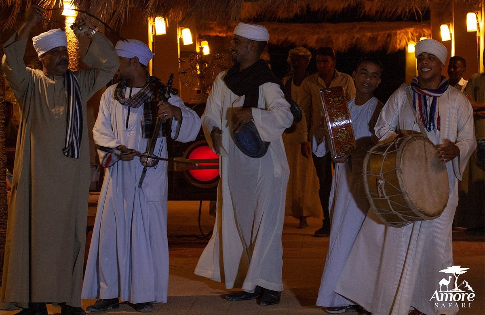
We are #1 leading desert safari and excursions company in Marsa Alam,Port Ghalib and El Quseir . - Since 2003 until now our goal is to create for our dear guests the perfect combination between fun adventures, unforgettable experience, amazing memories with the highest levels of safety! - We are NOT an excursion company, tour operator, website, broker or Facebook page selling excursions online!! We own and run the business! it's our job, we love it and we are happy to serve you with pleasure. When you book with us you are making a direct deal with out any third party taking commission in the middle.
Wadi El Gemal National Park
El Gemal National Park is a national park in Egypt. It is 7,450 square kilometres (2,880 sq mi) in size, including 4,770 square kilometres (1,840 sq mi) of land and 2,100 square kilometres (810 sq mi) of marine space,
 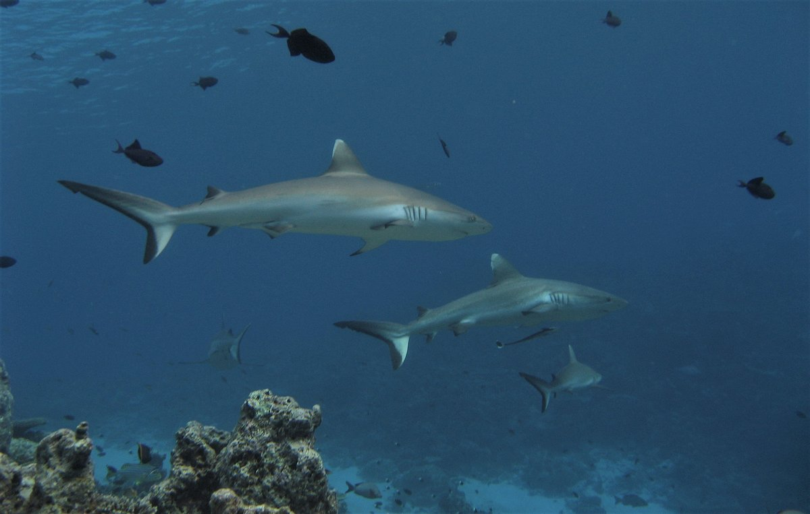
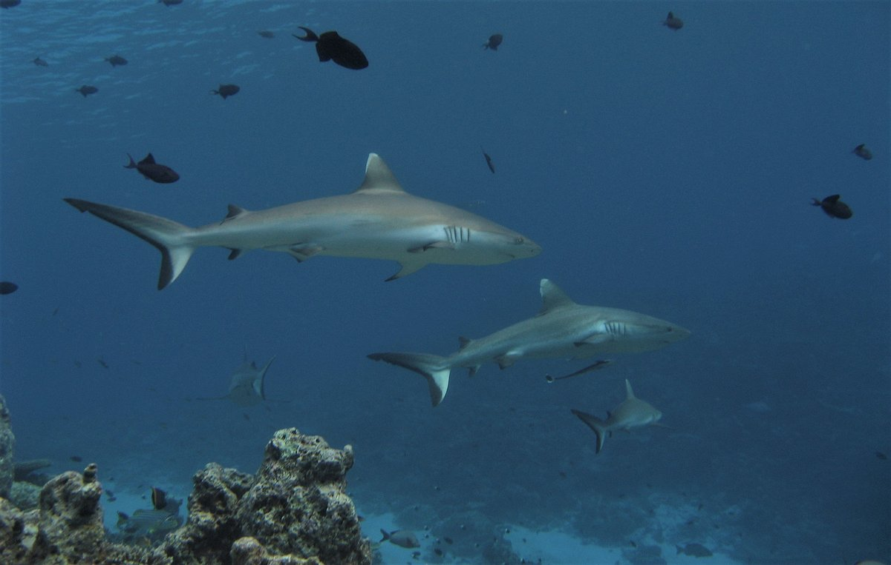


 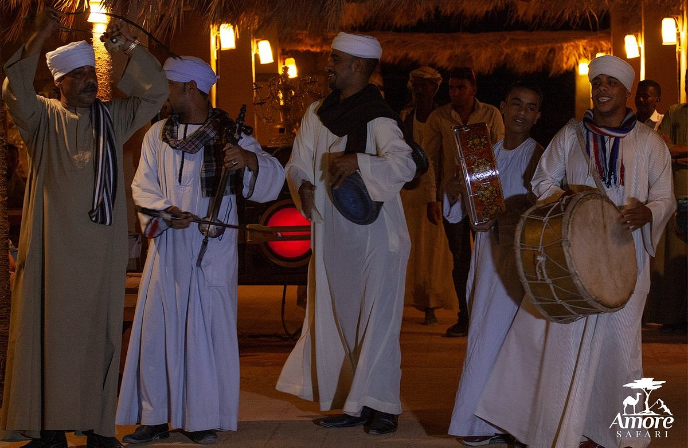
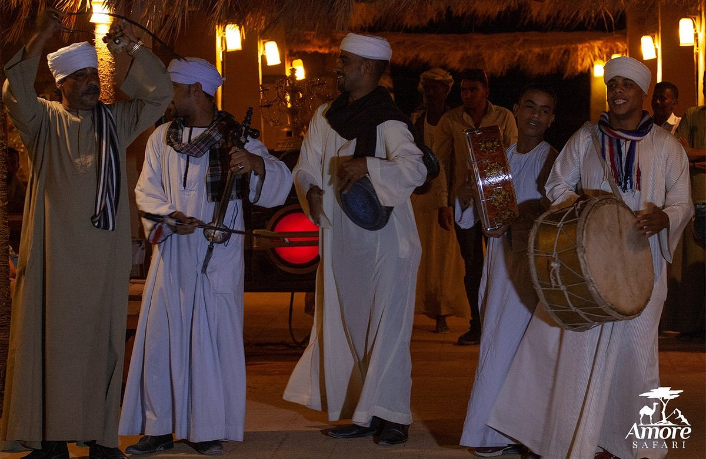
 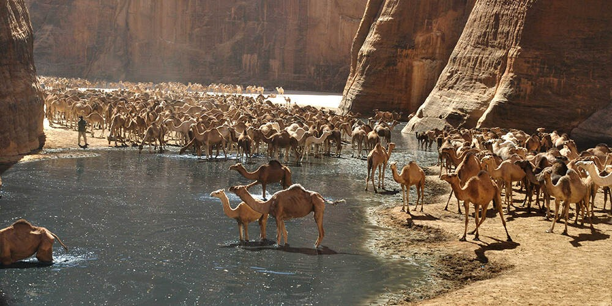
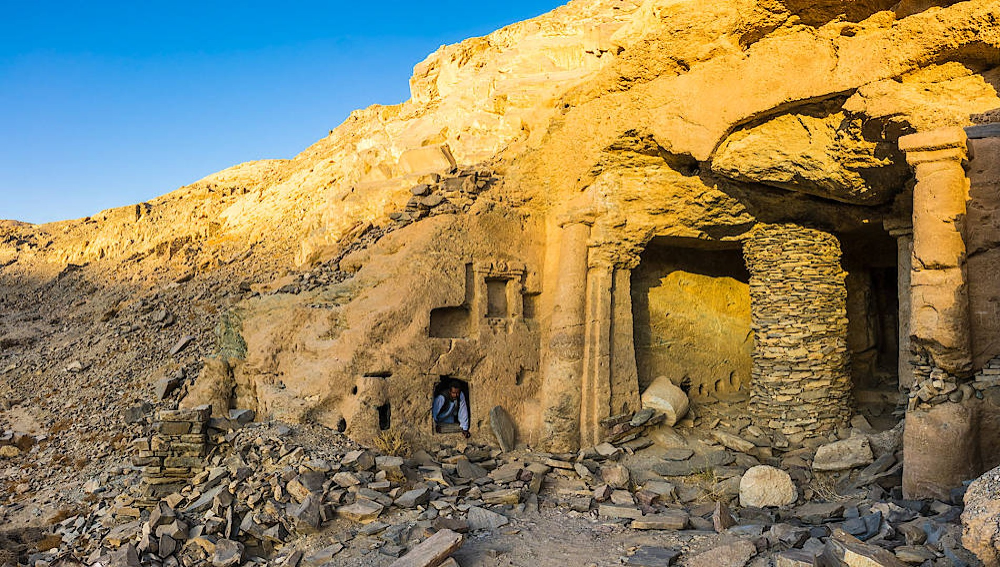
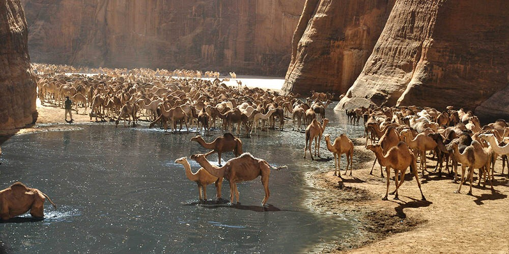
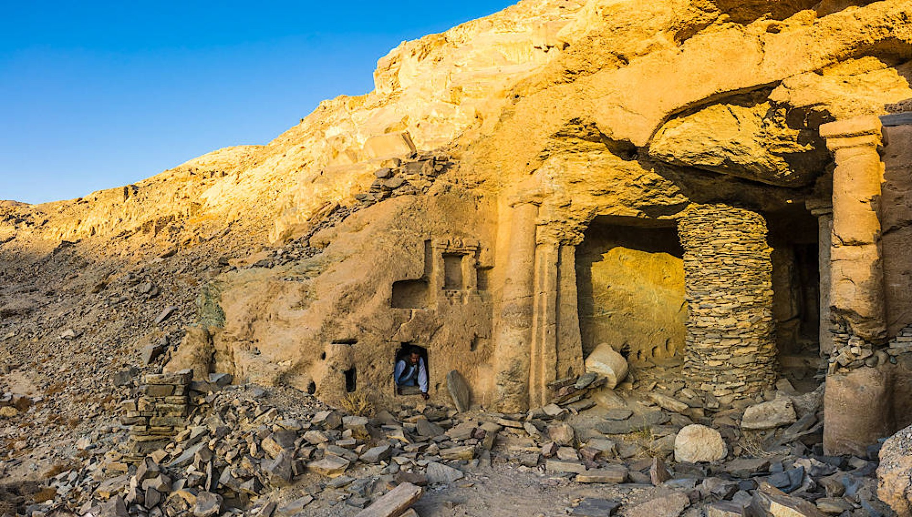